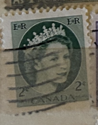
| SOURCE | TITLE| IMAGE MATCH | click to source page |
| ebid.net | 1954 Canada, Queen Elizabeth II, 2c green, used stamp on eBid Ireland | 135101954 | 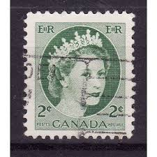 |
| eBay | CANADA Postage ~ Queen Elizabeth II ~ Green 2₵ Stamp ~ Cancelled/Posted ~1954-02 | eBay | 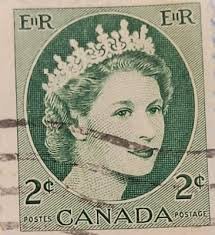 |
| Find Your Stamps Value | Value of canadian 2 cent queen elizabeth stamps | 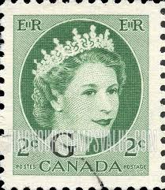 |
| HipStamp | Canada #338 2 cent Queen Elizabeth 2, F-VF used | Canada, General Issue Stamp / HipStamp | 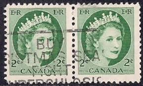 |
| eBay | Green Royalty Elizabeth II (1952-2022) Era Canadian Stamps for sale | eBay | 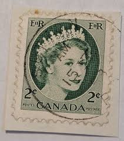 |
| eBay UK | 1954 Canada Stamp x 1 - Queen Elizabeth II - Cancelled | eBay UK | 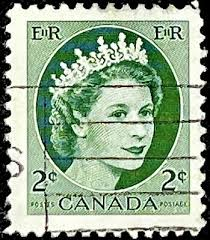 |
| eBay | Green Elizabeth II (1952-2022) Era Canadian Stamps for sale | eBay | 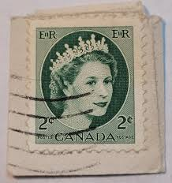 |
| eBay | Las mejores ofertas en Decimal verde usado estampillas de Canadá | eBay | 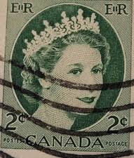 |
| Bob Shop | Canada - 1954 CANADA QUEEN ELIZABETH II was listed for 1.20 on 23 Jun at 09:01 by TROTSKIE in Cape Town (ID:644076061) | 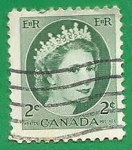 |
| Flickr | E R stamp Canada 2c Queen Elizabeth Windsor timbres Kanada… | Flickr | 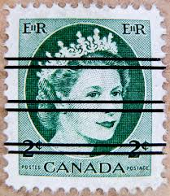 |
| HipStamp | Canada - #338 Queen Elizabeth Precancel - Used | Canada, General Issue Stamp / HipStamp | 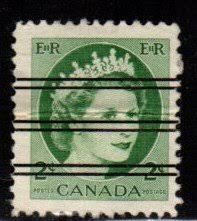 |
| Bob Shop | Canada - CANADA 1954 - Queen Elizabeth II COIL STAMPS - FINE USED was listed for 8.50 on 24 Jan at 18:01 by ultimate stamp in Durban (ID:632625006) | 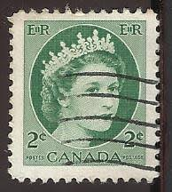 |
| Arpin Philately | Buy Canada #338xxi - Queen Elizabeth II (1954) 2¢ - Precancelled (no.338Iv), NF, Ribbed vertically | Arpin Philately | 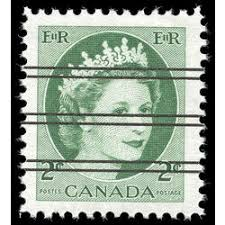 |
| Alamy | Stamp canada elizabeth hi-res stock photography and images - Alamy | 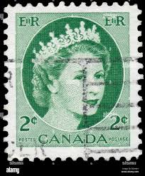 |
| Find Your Stamps Value | Value of queen elizabeth canadian 1 cent stamp stamps | 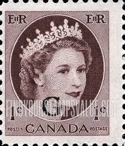 |
| Dreamstime.com | World Postage Stamps Canada Stock Photos - Free & Royalty-Free Stock Photos from Dreamstime | 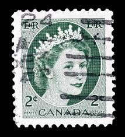 |
| Mystic Stamp Company | 337 - 1954 Canada - Mystic Stamp Company | 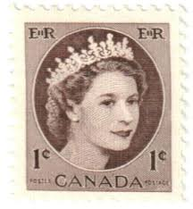 |
| Dreamstime.com | 107 Queen Elizabeth Alexandra Mary Stock Photos - Free & Royalty-Free Stock Photos from Dreamstime | 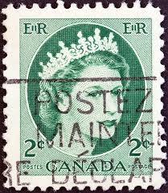 |
| eBay | Canada Postage ~ Queen Elizabeth II ~ Green 2¢ Stamp ~ Cancelled/Posted ~ E09 | eBay | 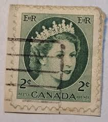 |
| Postage Stamp Guide | Queen Elizabeth II - Green - Ribbed Horizontally - Canada Postage Stamp | 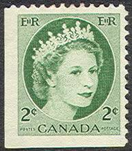 |
| eBay | Canada Stamp Queen Elizabeth II 2c Used GREEN STAMP | eBay | 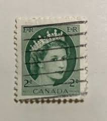 |
| eBay | Canada Postage ~ Queen Elizabeth II ~ Green 2¢ Stamp ~ Cancelled/Posted ~ E10 | eBay | 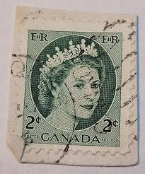 |
| eBay | Canada Stamp Queen Elizabeth II 2c Used 338 | eBay | 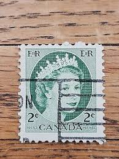 |
| Dreamstime.com | 241 Country Royal Mail Stock Photos - Free & Royalty-Free Stock Photos from Dreamstime - Page 2 | 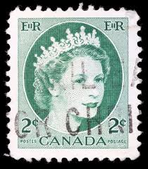 |
| Alamy | Canadian stamp elizabeth Cut Out Stock Images & Pictures - Alamy | 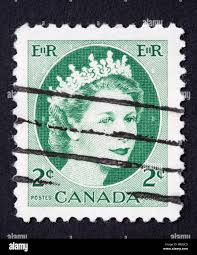 |
| eBay | CANADA Postage ~ Queen Elizabeth II ~ Green 2₵ Stamp ~ Posted ~ 1954 ~ O57 | eBay | 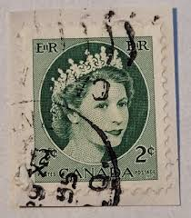 |
| Alamy | CANADA - CIRCA 1953: a stamp printed in the Canada shows Queen Elizabeth II, Queen of England, circa 1953 Stock Photo - Alamy | 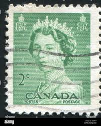 |
| iStock | Canadian Post Stamp-foton och fler bilder på Elizabeth II - Elizabeth II, Drottning - Kunglig person, England - iStock | 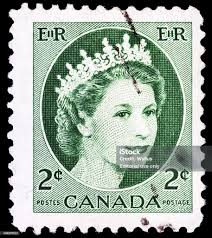 |
| eBay | Canada Postage ~ Queen Elizabeth II ~ Green 2¢ Stamp ~ Cancelled/Posted ~ G29 | eBay | 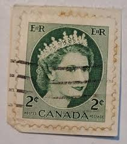 |
| eBay | CANADA Postage ~ Queen Elizabeth II ~ Green 2₵ Stamp ~ Posted ~1954 ~ Y75 | eBay | 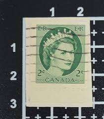 |
| Shutterstock | 7+ Thousand Canada Postage Stamp Royalty-Free Images, Stock Photos & Pictures | Shutterstock | 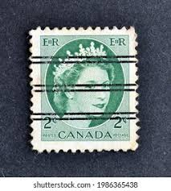 |
| eBay | Canada Postage ~ Queen Elizabeth II ~ Green 2¢ Stamp ~ Cancelled/Posted ~ 04 | eBay | 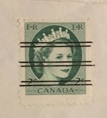 |
| Arpin Philately | Buy Canada #345ivst - Queen Elizabeth II (1954) 4 x 2¢ - Fluorescent, strip of 4 | Arpin Philately | 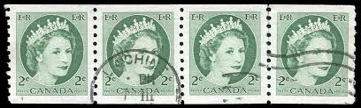 |
| eBay | Canada #338 CDS Cancel High River, AB {ebhs111} | eBay | 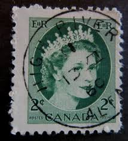 |
| eBay | CANADA 1954 CANADIAN QUEEN ELIZABETH FACE 2 CENT RARE 100% STAMP SHIFTED ERROR | eBay | 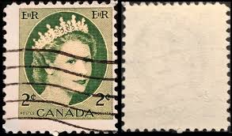 |
| eBay | Canada #338 CDS Cancel Holden, AB {ebhs107} | eBay | 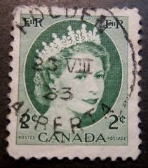 |
| TrueGether | Shop Used from Canada Online at Best Prices | TrueGether | 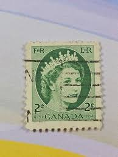 |
| LiveAuctioneers | Aynsley Bone China Queen Elizabeth Ii Coronation Cup | 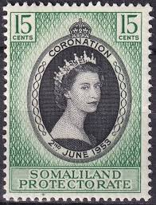 |
| Postage Stamp Guide | Queen Elizabeth II - Green - Canada Postage Stamp | 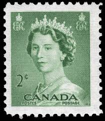 |
| HipStamp | Canada #341 5c Queen Elizabeth II | Canada, General Issue Stamp / HipStamp | 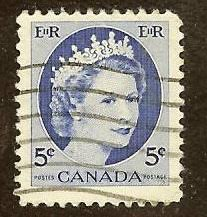 |
| eBay | CANADA Postage ~ Queen Elizabeth II ~Green 2¢/Purple 4¢ Stamps ~ Cancelled ~1954 | eBay | 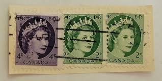 |
| bwdavis.ca | Canada - QE II part 1 1953-1964 - Canadian Stamps and collectables of Bwdavis | 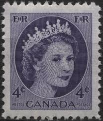 |
| eBay | Canada Unused Block of Stamps - 1954 2 Cents Queen Elizabeth II - AB06 | eBay | 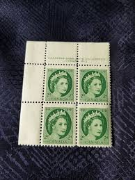 |
| eBay | Foreign Stamp 2c Canada Used - # 6712 | eBay | 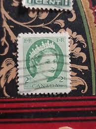 |
| eBay | Canada Scott#O44 -5c - Queen Elizabeth ii Wilding "G" overprint Official -USED | eBay | 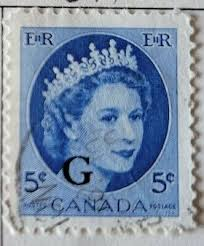 |
| P J Symes | Queen Elizabeth II on World Paper Money | 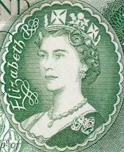 |
| eBay | Canada Unused Block of Stamps - 1954 2 Cents Queen Elizabeth II - AB04 | eBay | 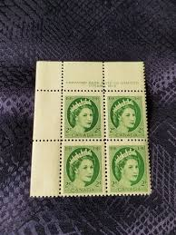 |
| Alamy | Queen Elizabeth II, postage stamp, Canada, 1954 Stock Photo - Alamy | 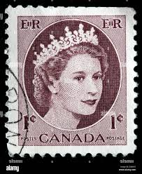 |
| eBay | Wilding issue strips of 4 COILS MNH 2c, 4c, 5c, Cat$23 Canada mint | eBay | 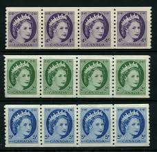 |
| 7 Rare stamps ideas | rare stamps, stamp collecting, postage stamps | ||
| Alamy | Elizabeth seal hi-res stock photography and images - Alamy | |
| eBay | Canada Scott 338 Mint never hinged. | eBay | |
| eBay | ERROR CANADA 5C MNH OG BLOCK 4 STAMPS EXTRA BLUE INK ON TABS QUEEN ELIZABETH II | eBay | |
| Alamy | Queen elizabeth queen 1962 hi-res stock photography and images - Alamy | |
| Indian Hobby Club | STAMPS – Page 62 – Indian Hobby Club | |
| eBay | Grenada Postage Stamps Pre-1974 for sale | eBay | |
| HipStamp | Australia - Scott #365 - 5d - Queen Elizabeth II - Used | Australia & Oceania - Australia, General Issue Stamp / HipStamp | |
| eBay | 1956 CANADA LOT OF 10 OVERPRINTED "G' STAMPS QUEEN ELIZABETH II WILDING | eBay | |
| World Stamps Project | Canada, Elizabeth II: Varieties of Postage Stamps – World Stamps Project | |
| lastdodo.com | Queen Elizabeth II 2 (1988) - Great Britain - LastDodo |